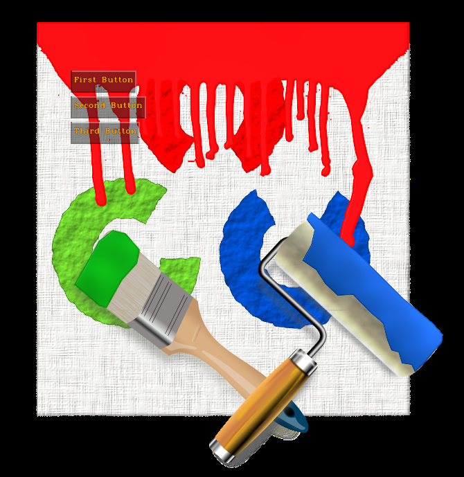

In the previous tutorials we've positioned the Widgets independetly.
In many cases you want a set of widgets to be located together in a certain order.
For this you need AutoLayout derived classes:
In this tutorial we'll return to some previous tutorial code and see how to do it in a layout. Then we'll write a simple form which gets inputs from the user.
Notice along the tutorial the usage of anchors and and stretching.
For anchors, you have 2 different APIs:
For stretching, you have 2 different APIs:
Center text on the screen
In the tutorial Displaying text where ever you want we created a Text widget and manually tried to center it on the screen.
To center it vertically and horizontally, you would use 2 layout managers - canvascv::VerticalLayout and canvascv::HorizontalLayout.
The top layout should stretch to the full dimensions of the screen (because we want CENTER to be relative to that). Here we choose a VerticalLayout, in which widgets are layered automatically veritcally, but horizontally you can specify where to put your widget.
Now we'll add a HorizontalLayout to the above layout and request to be anchored to the CENTER.
In the HorizontalLayout, widgets are layered automatically horizontally, but vertically you can specify where to put your widget. This widget will strectch in the Y direction, so CENTER in it will be relative to the height of the image.
So finally we'll add our Text, just like before, but now instead of adding it to the Canvas, we'll add it to the above HorizontalLayout, and ask to be anchored to the CENTER of it.
So the VerticalLayout will CENTER the HorizontalLayout and it will CENTER the Text. Since the layouts are stretching to the full dimension of the image, it will always be centered.
The added/changed code is much shorter than the explanation:
vLayout->setStretchXToParent(true);
vLayout->setStretchYToParent(true);
hLayout->setStretchYToParent(true);
This is the full code:
#include <canvascv/canvas.h>
#include <canvascv/widgets/text.h>
#include <canvascv/widgets/verticallayout.h>
#include <canvascv/widgets/horizontallayout.h>
{
static bool showHelp = true;
static string helpMsg =
"Usage:\n"
"=====\n"
"h: toggle usage message\n"
"*: toggle canvas on/off\n"
"q: exit";
showHelp = ! showHelp;
}
int main(int argc, char **argv)
{
--argc;
++argv;
if (! argc)
{
Canvas::fatal(
"Must get a path to an image as a parameter" , -1);
}
Mat image = imread(argv[0]);
if (image.empty())
{
}
Canvas c(
"LayoutTxt", image.size());
help(c);
namedWindow("LayoutTxt", WINDOW_AUTOSIZE);
vLayout->setStretchXToParent(true);
vLayout->setStretchYToParent(true);
hLayout->setStretchYToParent(true);
txt->setFontHeight(50);
txt->setThickness(2);
int key = 0;
Mat out;
do
{
switch (key)
{
case 'h':
help(c);
break;
case '*':
break;
}
imshow("LayoutTxt", out);
} while (key != 'q');
destroyAllWindows();
return 0;
}
Notes:
A simple buttons group
Here we're going to create some buttons in a group.
The buttons are going to be evenly spaced in a VerticalLayout.
The code is simple:
#include <canvascv/canvas.h>
#include <canvascv/widgets/button.h>
#include <canvascv/widgets/verticallayout.h>
int main(int argc, char **argv)
{
--argc;
++argv;
if (! argc)
{
Canvas::fatal("Must get a path to an image as a parameter" , -1);
}
Mat image = imread(argv[0]);
if (image.empty())
{
Canvas::fatal(string("Cannot load image ") + argv[0], -2);
}
namedWindow("LayoutButtons", WINDOW_AUTOSIZE);
Canvas c(
"LayoutButtons", image.size());
auto vLayout = VerticalLayout::create(c, {100,100});
Button::create(*vLayout,
"First Button",
"one");
Button::create(*vLayout,
"Second Button",
"two");
Button::create(*vLayout,
"Third Button",
"three");
int key = 0;
do
{
} while (key != 'q');
destroyAllWindows();
return 0;
}
Notes:
- When creating widgets the first parameter is the containing layout (the Canvas is also a Layout).
- As you can see, there is a possible problem with this code - the length of the buttons:

- To fix this, add these lines after the creation of the buttons:
vLayout->at<
Button>(0)->setStretchX(
true);
vLayout->at<
Button>(1)->setStretchX(
true);
vLayout->at<
Button>(2)->setStretchX(
true);
- Notice how we can access the items in a layout by their index.
- Again - canvascv::Widget::setStretchX() and canvascv::Widget::setStretchY() will stretch self to size of the largest widget in our layout.
- Now the buttons have the same length:
A full dialog
Now it's time to take all the widgets we've been talking about in the tutorials and make a dialog frame for our user.
As always it's going to be displayed on an image, but this time we'll make sure the image size fits into the screen. Since OpenCV doesn't expose the desktop size, we'll hard code a rough estimation of 1024x768 maximum size.
- The dialog will be in a VFrame.
- top - title in a RAISED VFrame/HFrame
- bottom - body in a HFrame - split into 2 horizontal parts:
- Left part will have a SUNKEN VFrame with
- Right part will have a VFrame with
- HFrame with Text to display the user's RadioButtons and CheckBoxes selections
- HorizontalLayout with "Reset"/"Cancel"/"Ok" buttons (aligned to BOTTOM)
#include <canvascv/canvas.h>
#include <canvascv/widgets/button.h>
#include <canvascv/widgets/hframe.h>
#include <canvascv/widgets/vframe.h>
#include <canvascv/widgets/radiobuttons.h>
#include <canvascv/widgets/checkboxes.h>
#include <canvascv/widgets/text.h>
void buildDemoDialog(
Canvas &c)
{
auto topFrame = VFrame::create(c, {100,100});
auto titleFrame = VFrame::create(*topFrame);
auto bodyFrame = HFrame::create(*topFrame);
auto leftBodyFrame = VFrame::create(*bodyFrame);
auto rightBodyFrame = VFrame::create(*bodyFrame);
auto textInfoFrame = HFrame::create(*rightBodyFrame);
auto buttonsLayout = HorizontalLayout::create(*rightBodyFrame);
leftBodyFrame->setFrameRelief(Widget::SUNKEN);
textInfoFrame->setFrameRelief(Widget::SUNKEN);
titleFrame->setStretchX(true);
bodyFrame->setStretchX(true);
rightBodyFrame->setStretchY(true);
auto title = Text::create(*titleFrame, "Dialog title goes here", Widget::CENTER);
title->setStretchXToParent(true);
title->setAlpha(0);
titleFrame->setFrameRelief(Widget::RAISED);
shared_ptr<Text> textInfo = Text::create(*textInfoFrame, "");
shared_ptr<RadioButtons> radioButtons = RadioButtons::create(*leftBodyFrame, {"RBOption1", "RBOption2"}, 0);
shared_ptr<CheckBoxes> checkBoxes = CheckBoxes::create(*leftBodyFrame, {"CBOption1", "CBOption2", "CBOption3"});
{
stringstream s;
for (int i = 0; i < checkBoxes->size(); ++i)
s <<
"CheckBox option '" << checkBoxes->
getTextAt(i) <<
"' is " << checkBoxes->isChecked(i) <<
"\n";
s << "RadioButtons selection is '" << radioButtons->getTextAt(radioButtons->getSelection())<< "'\n";
textInfo->setText(s.str());
};
cb(0,0);
textInfo->setAlpha(0);
radioButtons->setUserCB(cb);
checkBoxes->setUserCB(cb);
Button::create(*buttonsLayout, "Reset")->onPress([radioButtons, checkBoxes](Widget *)
{
for (int i = 0; i < checkBoxes->size(); ++i)
checkBoxes->setChecked(i, false);
radioButtons->setSelection(0);
});
Button::create(*buttonsLayout, "Cancel");
Button::create(*buttonsLayout, "Ok");
buttonsLayout->setStretchYToParent(true);
buttonsLayout->setLayoutAnchor(Widget::CENTER);
buttonsLayout->doForAll([](Widget *w)
{
}, 1, false);
}
int main(int argc, char **argv)
{
--argc;
++argv;
Mat image;
if (argc)
{
Mat orig = imread(argv[0]);
if (orig.empty())
{
Canvas::fatal(string("Cannot load image ") + argv[0], -1);
}
if (orig.cols > 1024)
{
double ratio = 1024. / orig.cols;
cv::resize(orig, image, Size(), ratio, ratio);
}
else
{
image = orig;
}
}
else
{
Canvas::fatal("Must get a path to an image as a parameter" , -2);
}
namedWindow("Dialog", WINDOW_AUTOSIZE);
moveWindow("Dialog", 10, 10);
Canvas c(
"Dialog", image.size());
buildDemoDialog(c);
int key = 0;
do
{
} while (key != 'q');
destroyAllWindows();
return 0;
}
Notes:
- Creating the frames and layouts first is recommended. Everything is inserted into them after that.
- We're using the same callback here for handling changes in the CheckBoxes and RadioButtons.
- Since widgets are layered on top of each other, you might want to make some of the widget transparent, by using canvascv::Widget::setAlpha().
- You can perform actions recursively on CompoundWidgets with canvascv::CompoundWidget::doForAll().
- This is what you should get:
That's all for this tutorial


 1.8.11
1.8.11